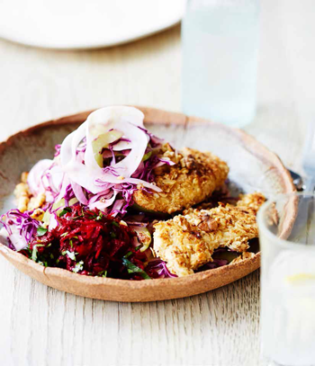
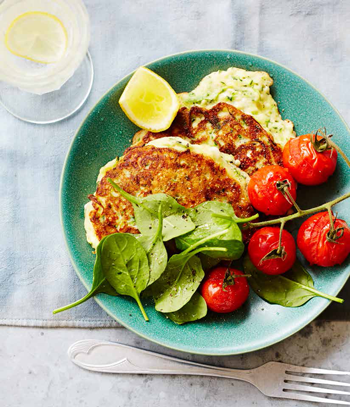
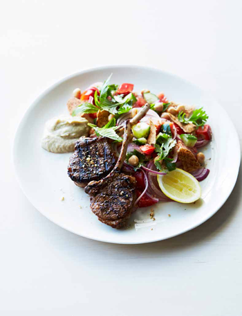

Tips to save time and still eat healthy. Visit the blog for simple exciting recipes...

Chrispy-chicken(Healty Cooked)
For the beetroot relish, combine the vinegar, parsley and brown sugar in a glass bowl and stir until
the sugar has dissolved. Add the beetroot and stir well. Season to taste with a little sea salt and
freshly ground black pepper. Set aside for 30 minutes or longer, stirring occasionally, for the
flavours to develop.
See
More...

zucchini-fritters(Healty Cooked)
Preheat the oven to 180°C (160°C fan-forced). Line 2 baking trays with baking paper.
Place the tomatoes on one of the prepared trays with the thyme and garlic, then roast for 15–18
minutes or until the tomatoes start to split. Reduce the oven temperature to 100°C (80° fan-forced)
and leave the tomatoes in the oven.
See
More...

Plan mutton cutlets(Healty Cooked)
Place the lamb, garlic, lemon zest and juice in a zip-lock bag. Seal and set aside for 5–10 minutes
to marinate.
Combine the onion, vinegar and a pinch of the sumac in a small bowl and set aside, stirring
occasionally.
See
More...